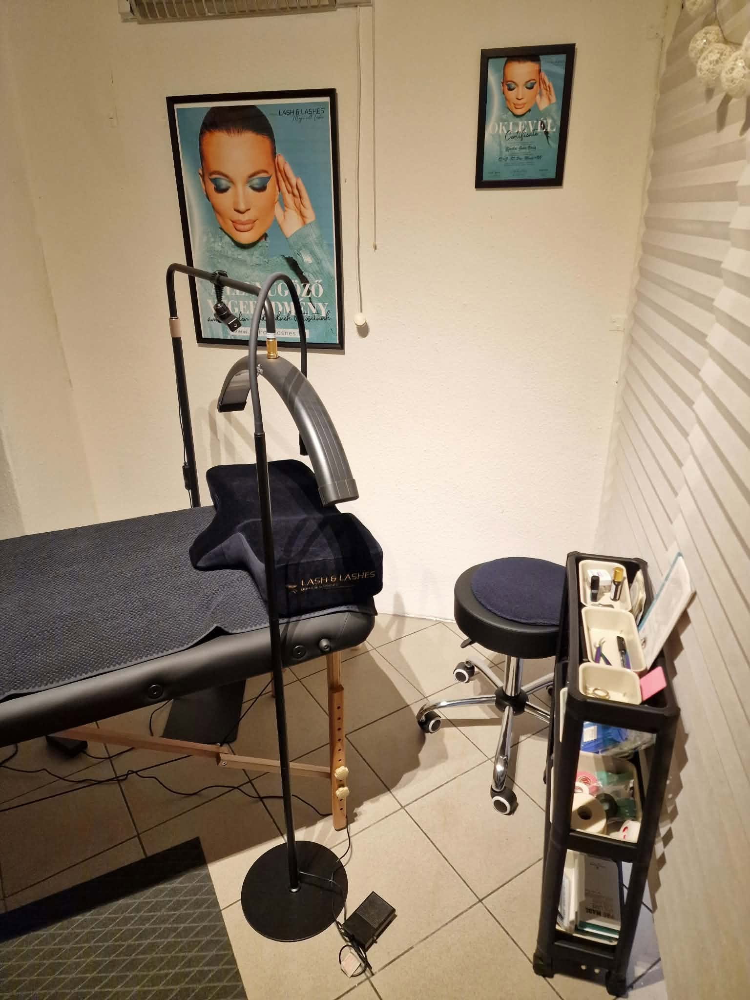
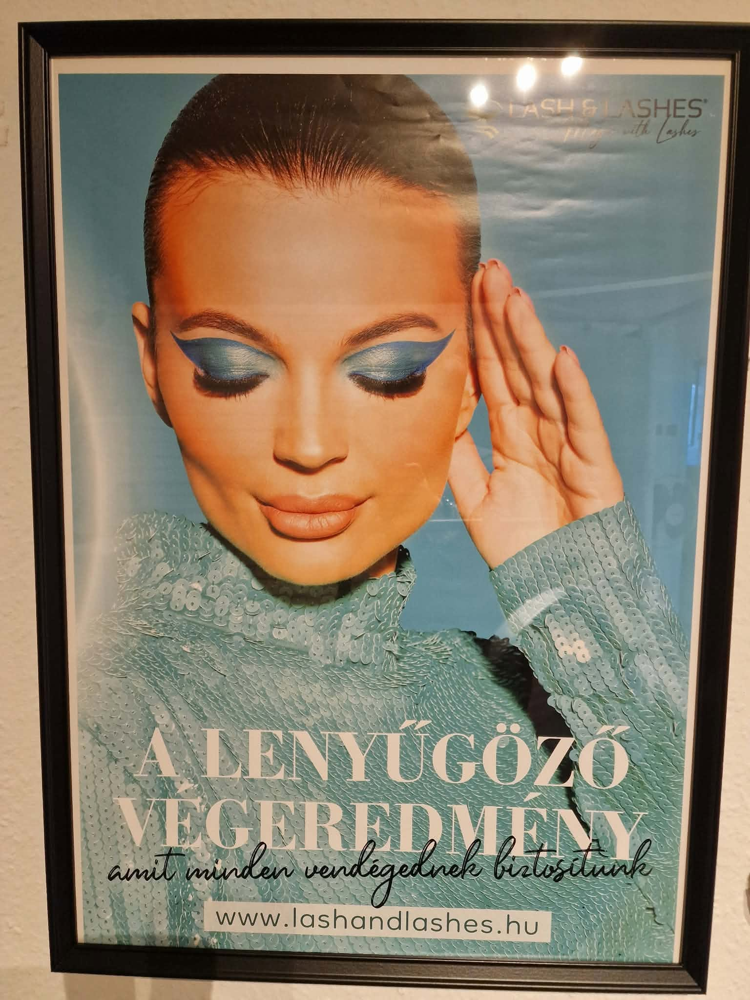

Lőcsei Szalon • Modern szempillatechnika
UV szempillaépítés
Természetes szépség, tartós eredmény – személyre szabott stílusban.
A tekinteted új ragyogása
Gyönyörű pillák, a te stílusodban
Fedezd fel a modern UV-technológiás szempillaépítést! Az UV-fénnyel aktiválható, gyorsan kötő ragasztó lehetővé teszi a precíz illesztést és a gondos, személyre szabott munkát.
Akár visszafogott, természetes megjelenésre, akár dúsabb, hangsúlyosabb pillákra vágysz, az 1D–5D szettek között megtalálhatod a hozzád illő stílust.
A szempillák tartóssága az egyéni adottságoktól és az utóápolástól is függ.

Precíz technológia
Modern UV szempillaépítés
Az UV-fénnyel kötő ragasztó kontrollált munkavégzést tesz lehetővé. A szett kialakítása a természetes pillákhoz, a szemformához és az elképzelt hatáshoz igazodik.

Részletek, amelyek számítanak
Szempillaépítés – munkáink
Néhány pillanatkép az elkészült szettekről.


Érdeklődés és időpontfoglalás
A részletekről és a szabad időpontokról érdeklődj a szalon elérhetőségein.
Elérhetőségek →